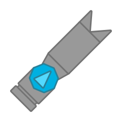

The Model-M-Pawner is a Software that is Missiler-themed. It upgrades from Software and Missiler at level 60.
Design
The Tank Itself
It resembles a Software but the front barrel is a Missiler.
Its body is octagonal with a isocsceles triangular light-colored decoration on top.
The Minion

How the minion actually looks like
It has a complicated body shape with 1 Missiler and 4 Thrusters (2 of them being Gatling Guns).
Technical
"Protectorate" is the official Woomy term for a Software minion.
The tank itself
It is a Missiler that has a singular Missiler-themed protectorate as a minion.
The Protectorate
The protectorate itself has a Missiler barrel on the back, 4 Bateau thrusters (the forward thrusters being longer and having g.gatling), but the protectorate itself only has 80% Software protectorate health.
The protectorate also has a kiting AI, preferring to stay out of an enemy's range.
Trivia
This tank is named after a community HE Missile starter from Cosmoteer.

Tier 5 Tank
Upgrades from Software and Missiler
Weapons:
- 1 Missiler Barrel
- 1 Model-M-Pawner
Inherits base body stats from Software
Spawns an agile and evasive Missiler-themed minion to fight for it.